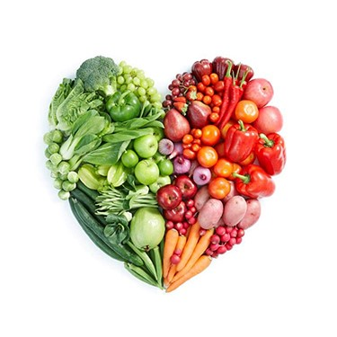
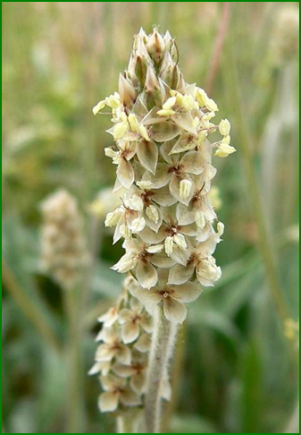
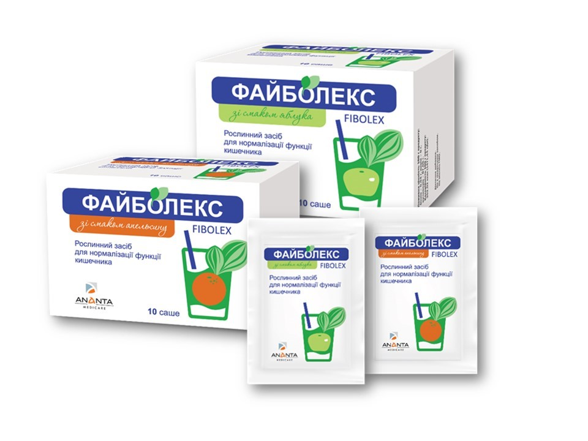

Народная мудрость о погрешностях питания
Народная мудрость о погрешностях питания

Здоровое питание — это питание, обеспечивающее рост, нормальное развитие и жизнедеятельность человека, которое способствует укреплению и поддержанию здоровья, а также профилактике заболеваний. Как много сказано и написано на эту тему, но каждый вкладывает свой смысл в это понятие. Давайте же обратимся к кладезю народной мудрости, почитайте, что говорят пословицы на этот счет.
«Нужно есть, чтобы жить, а не жить, чтобы есть»
Пожалуй, одно из наиболее известных изречений о пище. Слова, принадлежащие Сократу, актуальны во все времена. Особенно сейчас, когда настолько эволюционировала культура питания и преумножилось разнообразие пищи. Этому также способствовало появление всевозможных видов «быстрой еды», полуфабрикатов, рафинированных продуктов, усилителей вкуса и т.п. Безусловно, это вкусно, но далеко не полезно. И факт остается фактом, частое переедание негативно отражается на пищеварительных процессах и состоянии всего организма. Нужно помнить, что все хорошо в меру.
«Не всё в рот, что око видит»
Еще одна пословица, которая напоминает об избирательности в еде. Ведь вы наверняка замечали, что, употребляя одни продукты или блюда вы чувствуете легкость и комфорт, другие – тяжесть в животе и чувство распирания. Имеет влияние и способ приготовления - варенные и печенные блюда усваиваются лучше, чем жаренные или копченые. Пищевой рацион каждого человека индивидуален, поэтому один и тот же продукт может одного крепить, а другого слабить. Обращайте внимание на свое самочувствие после приема пищи, относитесь к ее выбору с умом, тогда она не только будет источником энергии, но и залогом бодрости и хорошего самочувствия.
«Живот не мешок: про запас не поешь»
Гласит еще одна пословица, напоминая, что люди не верблюды. Поэтому, не стоит пренебрегать количеством приемов пищи, съедая много в один прием. Единственное чего можно добиться в этом случае – растяжение стенок желудка. Кроме того, переедание требует усиления ферментативной активности – выработки большего количества ферментов поджелудочной и желчи. Это определенная нагрузка на пищеварительный тракт. Постоянное переедание способствует возникновения запора.
«Не глотай, не прожевавши, не болтай, не подумавши»
О второй части поговорки, вывод делайте сами, а вот на счет «не глотай, не прожевавши» – и говорить нечего. Как известно, пищу нужно тщательно пережевывать. И это не спроста. Ведь, при пережевывании пища не только измельчается, она также обрабатывается ферментами, которые содержатся в слюне. Это облегчает ее дальнейшее усвоение. Плохо пережеванная твердая пища может долго оставаться в пищеварительном тракте, нарушая нормальную работу и приводить к развитию запоров.
«Что за беда, коли пьётся вода»
В организме человека содержится от 50 % до 75 % воды, в зависимости от веса и возраста. Потеря более 10 % воды может привести к смерти. Поэтому ежедневное потребление воды около 1,5-2 литров является залогом хорошего самочувствия и нормального функционирования органов и систем. Постоянный дефицит воды может отражаться на состоянии кожи, работе сердечно – сосудистой и пищеварительной систем. Хронический недостаток воды может стать причиной затруднений в работе кишечника и развитии запора.
«Овощи на столе — здоровье в доме»
«Обед без овощей — праздник без музыки»
Сразу две приведенные пословицы гласят о важности натуральных компонентов в ежедневном рационе человека. Овощи богаты натуральными пищевыми волокнами, лёгкими для пищеварения нутриентами, минералами, аминокислотами и витаминами. Хочется подробнее рассказать о пищевых волокнах, ведь они совершенно незаменимы для полноценного здорового питания. Именно они способствует улучшению работы кишечника, выводят токсины и предупреждают развитие запоров.
Источниками пищевых волокон являются продукты из зерна, бобовые, овощи и фрукты. Их нет в животной пище – рыбе, мясе, молоке и яйцах. Пищевые волокна – это большая группа веществ: крахмал, лигнин, целлюлоза, камеди, слизи, пектиновые вещества и т.д.
Здоровое питание предполагает обязательное наличие пищевых волокон. Согласно рекомендациям специалистов, ежедневная норма потребления пищевых волокон для взрослого составляет:
14 г пищевых волокон на 1000 ккал, что равно:
Для мужчин - 38 грамм в сутки
Для женщин - 25 грамм в сутки
Для детей школьного возраста 15-20 грамм в сутки пищевых волокон.
В реалиях повседневной жизни, среднестатистический человек потребляет около половины рекомендуемой нормы. И это не удивительно, ведь если отобразить данные цифры в виде продуктов, выходит, что в день нужно съедать 11 тарелок овощного салата. Согласитесь, под силу разве что вегетарианцу.
Наиболее популярные пищевые волокна, которые известны многим – это клетчатка. Она входит в структуру большинства растений, и представляет собой углевод, который не переваривается в организме человека. Несмотря на то, что клетчатка практически не усваивается организмом, она играет важную роль в пищеварении. Содержание клетчатки в растениях существенно варьируется в зависимости от сорта и способа выращивания, а в готовых продуктах питания — от конкретных технологий производства. Продуктами питания, наиболее богатыми клетчаткой, являются отруби (по сути, это твердая оболочка зерна), льняное семя и цельнозерновые крупы (например, перловка, гречка и овес).
Отруби – это достаточно грубые пищевые волокна, в виду их природной структуры крупного помола. Поэтому они могут усугублять воспаления при поражениях органов пищеварения, которые требуют щадящего отношения к слизистым (например, колиты, гастриты, дивертикулиты и др).
В отличие от отрубей, есть более мягкие волокна. Большую ценность имеют пищевые волокна с обволакивающим действием, к ним относится шелуха семян подорожника.
«Коль желудок портит стул — подорожник ешь, как мул»
Подорожник благодаря своим свойствам использовался во многих медицинах с давних времен. Насчитывает более 150 видов растений семейства Подорожниковые, распространённых по всему земному шару, хотя многие из них считаются сорняками. На территории Украины обычно используются Plantago major — подорожник большой и Plantago lanceolata L. — подорожник ланцетный.
Водный настой сока свежих листьев используются для разжижения мокроты и выведении ее при кашле. Применение водного настоя и свежего сока листьев подорожника способствует быстрому очищению и заживлению ран. Экстракт листьев подорожника большого оказывает кровоостанавливающее, ранозаживляющее и бактериостатическое действие. Сок свежих листьев эффективен при хронических гастритах, язвенной болезни желудка и двенадцатиперстной кишки с нормальной или пониженной кислотностью желудочного сока.
Очень интересным видом подорожника является подорожник яйцевидный (Plantago ovata), синоним - подорожник индийский. Это небольшое травянистое однолетнее растение отличается внешним видом семян: они не тёмно-бурые, а имеют телесно-розовый оттенок с пурпурной полоской в рубчике. Родина его - Индия, вследствие чего он издавна используется в рецептурах индийской медицины. Климатические условия произрастания этого вида подорожника очень суровы. Тропический климат, с устойчивыми ветрами, сменяется сезоном дождей. Выжить в таких условиях могут только те растения, которые запасают достаточное количество питательных веществ и активно связывают избыток воды. Именно поэтому, подорожник яйцевидный отличается от других видов количеством полезных веществ в семенах. Он содержит до 40% полисахаридов (пищевых волокон), в то время как другие виды содержат в 4 раза меньше полезных веществ.

Именно семена подорожника используются, когда «желудок портит стул». А конкретнее шелуха семян, которые входят в состав современного средства для нормализации работы кишечника Файболекс. Обратите внимание, это не обычное химическое слабительное, а средство на натуральной основе, которое приводит в норму работу кишечника и восполняет рацион пищевыми волокнами.

Для производства Файболекс одорожник яйцевидный выращивается на родине – в Индии, в естественной среде произростания. Благодаря этому, шелуха семян способна притягивать воду в 40 раз больше собственной массы и оказывать благоприятные эффекты на организм человека: способствует нормализации работы кишечника, стимуляции перистальтики и избавлению от запора, выведению токсических веществ из организма, а также улучшению состояния микрофлоры кишечника.
Кроме шелухи семян подорожника, в состав Файболекс входят натуральные волокна пшеницы и экстракт зеленого чая. Волокна пшеницы – источник клетчатки, которая стимулирует двигательную активность кишечника. Экстракт зеленого чая обладает антиоксидантным и общетонизирующим действие на организм.
Файболекс – это не обычное слабительное. Это натуральное средство для нормализации работы кишечника. Файболекс – просто, как глоток воды!
Способ применения Файболекс очень прост и удобен: по 1 пакетику 2-3 раза в день. Пакетик нужно развести в стакане воды до однородной массы, выпить и при возможности запить еще стаканом воды. Не принимайте Файболекс перед тем как собираетесь прилечь. Рекомендованный курс приема 7-14 дней.
Применяя Файболекс вашему организму помогает сама природа!
Диетическая добавка, не является лекарственным средством. В случае необходимости проконсультируйтесь с врачом. Перед применением ознакомьтесь с инструкцией. пример ссылки внутри p
Симптомы гонореи
Симптомы гонореи у мужчин:
- желтовато-белые выделения из мочеиспускательного канала;
- боль при мочеиспускании.
Симптомы гонореи у женщин:
- желтовато-белые выделения из влагалища;
- боль при мочеиспускании;
- межменструальные кровотечения;
- боль внизу живота
- Пример нумерованного списка
- Пример нумерованного списка
- Пример нумерованного списка
- Пример нумерованного списка
НЕЛЬЗЯ
|
НЕЛЬЗЯ
|